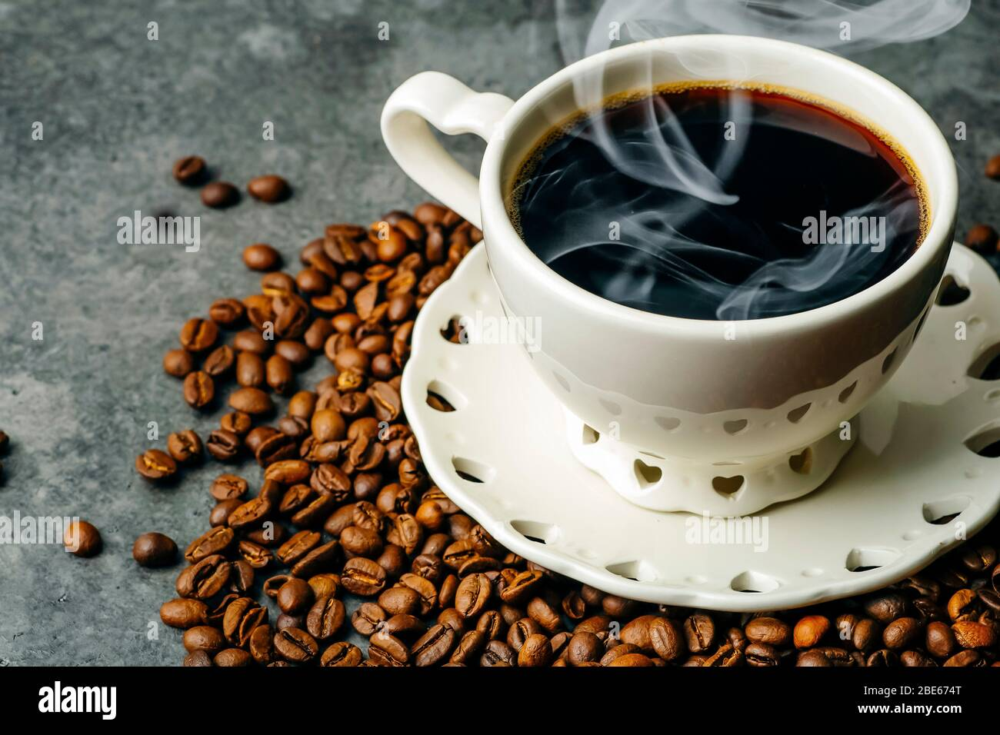

Dr. Sarah Namusoke
Agricultural Researcher
National Agricultural Research Organisation
Dr. Sarah specialises in agricultural research and coffee production. She works to improve coffee quality and sustainable farming practices.

John Mugisha
Coffee Industry Consultant
Uganda Coffee Development Authority
John has extensive experience in coffee development and marketing. He supports farmers in improving production and accessing international markets.

Mary Atim
International Trade Specialist
Ministry of Trade, Uganda
Mary focuses on international trade and business development. She helps promote Ugandan coffee in global markets.

Dr. James Kato
Coffee Quality Specialist
Uganda Coffee Research Institute
Dr. James specialises in coffee quality assessment and processing. He promotes improved standards throughout the coffee value chain.